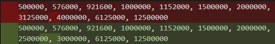
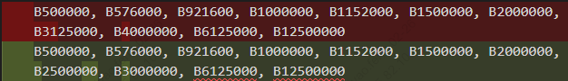

8. UART Operation Guide¶
This documentDescriptionin CV184x on the platformConfigurationandUse UART（Serial Port）、Loopback Test、CommonBaud RateSettingswithandUser spaceProgram of Flow。
8.1. Preparation¶
8.1.1. Kernel Requirements¶
Use of SDK BuildafterkernelImage。
8.1.2. Enable UART in the device tree¶
inDevice Treeinwill UART Nodeof status is "okay" 。UART NodeDefinition SDK of
build/boards/default/dts/cv184x/cv184x_base.dtsi in。with UART1 as an example：
uart1: serial@04150000 {
compatible = "snps,dw-apb-uart";
reg = <0x0 0x04150000 0x0 0x1000>;
clock-frequency = <25000000>;
reg-shift = <2>;
reg-io-width = <4>;
status = "okay"; /* Disable is "disabled" */
};
ModifyafterneedRebuildDevice TreeandBurningtoDevice。
8.1.3. UART Use DMA ofDevice TreeConfiguration¶
IfneedEnable UART DMA，need ModifyBoard-level DTS and cv184x_base.dtsi：
Board-level DTS Path：build/boards/cv184x/Board Name/dts_arm/Board Name.dts（Board NameReplaceisActual ）。
inBoard-level DTS of
sysdma_remapinis UART DMA Channel，andin UART in the nodedmas、dma-namesetc.Attribute。
cv184x_base.dtsi in UART1 of DMA Example（and sysdma_remap ）：
sysdma_remap {
ch-remap = <CVI_I2S0_RX CVI_I2S2_TX CVI_UART1_RX CVI_UART1_TX
CVI_SPI_NOR_RX CVI_SPI_NOR_TX CVI_I2S2_RX CVI_I2S3_TX>;
};
uart1: serial@04150000 {
compatible = "snps,dw-apb-uart";
reg = <0x0 0x04150000 0x0 0x1000>;
clock-frequency = <25000000>;
reg-shift = <2>;
reg-io-width = <4>;
status = "okay";
dmas = <&dmac 2 1 1>, <&dmac 3 1 1>;
dma-names = "rx", "tx";
capability = "txrx";
};
dmas inofChannel numberneedand sysdma_remap inof ，for example CVI_UART1_RX dmac Channel 2，CVI_UART1_TX dmac Channel 3。ModifyafterRebuildDevice TreeandBurning。
8.1.4. Pin Multiplexing¶
Through cvi_pimux ToolsorDevice Treewill GPIO PinConfigurationis UART Function（TX、RX、CTS、RTS etc.）， PinwithBoard-levelSchematicis 。
8.2. Operation Flow¶
8.2.1. UART Loopback Test¶
VerificationSerial Port andPin ：will UART of TX and RX ， Dataafter from Serial Port Content。
UART1 of TX and RX Pin。
inTerminalExecuteLoopback TestCommands（with ttyS1 as an example）：
stty -F /dev/ttyS1 115200 cs8 -cstopb -parenb
hexdump -C < /dev/ttyS1 &
echo "LOOPBACK_TEST" > /dev/ttyS1

If ，hexdump and echo ofContent。
8.2.2. UART Serial Communication (Terminal Transmit/Receive)¶
SettingsBaud Rateand （with ttyS1、115200 8N1 as an example）：
stty -F /dev/ttyS1 115200 cs8 -cstopb -parenb
Data：
echo "Hello UART" > /dev/ttyS1
Data（needin Terminalor Serial Port）：
cat /dev/ttyS1
View beforeSerial PortConfiguration：
stty -F /dev/ttyS1 -a
8.3. UART Extended Operations（Common / / Advanced）¶
on 、Loopback TestandViewConfiguration ，following Common Extended Operations → Troubleshooting Operations → AdvancedConfigurationOperation of Serial Port 、 、Flow control、Data and etc.Description。ExampleinDeviceNodewith /dev/ttyS1 as an example，Please ActualSerial PortReplace。
8.3.1. Common Extended Operations（Basic Function Supplement）¶
1. Serial PortFlow controlConfiguration（ ）
IfSerial Port Fileor Data ，can orSoftwareFlow control。 Flow controlneedBoard-levelSupport RTS/CTS Pinand 。
# Flow control（RTS/CTS）
stty -F /dev/ttyS1 crtscts 115200 cs8
# SoftwareFlow control（XON/XOFF）
stty -F /dev/ttyS1 ixon ixoff 115200 cs8
# Disable Flow control（Default）
stty -F /dev/ttyS1 -crtscts -ixon -ixoff
Flow controlcan ， etc. of ；SoftwareFlow controlNo need to Pin， 。
2. Serial PortData and （ ）
Need to Serial Port of Data ，can followingMethod。
cat + tee Data
cat /dev/ttyS1 | tee /tmp/uart_recv.log # Viewand
3. Serial Port / Data（ ）
before echo 。 File（IfFirmware、Data ） Use cat/dd， or Data。
# FiletoSerial Port
cat /mnt/sd/data.bin > /dev/ttyS1
# File ActualModify
# fromSerial Port Dataand （ Read）
dd if=/dev/ttyS1 of=/tmp/recv_bin.bin bs=1024 count=10 # Read 10KB
8.3.2. Troubleshooting Operations（Resolve Serial Port Problems）¶
1. Serial Port and Status
# ViewSerial PortDevice in
ls -l /dev/ttyS*
# ViewSerial PortDriverStatus（ 、Interrupt、 etc.， Common）
cat /proc/tty/driver/serial
# Serial Port
lsof /dev/ttyS1 # Output Indicates ，can
2. Serial Port / ResetSerial Port
Serial Port 、 ，can or DefaultConfiguration。
# Serial PortInput/Output
stty -F /dev/ttyS1 flush 0 # Input
stty -F /dev/ttyS1 flush 1 # Output
# willSerial Port is DefaultConfiguration
stty -F /dev/ttyS1 sane
8.3.3. AdvancedConfigurationOperation（Adaptation to Special Scenarios）¶
1. ConfigurationSerial Port
before Exampleis （-parenb）。If ，can needSettings。
# （even parity）
stty -F /dev/ttyS1 115200 cs8 -cstopb parenb -parodd
# （odd parity）
stty -F /dev/ttyS1 115200 cs8 -cstopb parenb parodd
# （Default，andbefore ）
stty -F /dev/ttyS1 115200 cs8 -cstopb -parenb
2. Serial PortInput / Outputand （ etc.）
# SettingsOutput etc.（Unit 0.01 seconds ），can of
stty -F /dev/ttyS1 ospeed 115200 ocrnl onlcr -ocrnl -onlcr delay 1
# DisableInput （ ）
stty -F /dev/ttyS1 -echo
8.3.4. UART Summary of Extended Operations¶
CommonConfiguration ： Serial Port （rc.local or systemd）、ConfigurationFlow control（ ）、Use cat/dd Data。
Operation ： Serial PortDeviceand （ls、/proc/tty/driver/serial、lsof/fuser）、 andReset（stty flush/sane）、 Verification 。
Advanced ：Data （tee、screen、minicom）、 、Output/ and 、Serial Port 。
Note ：Serial Port （Baud Rate、Flow control、 、Data / ）needand ， or ； Use screen or minicom etc.Tools； Data Use echo，Use cat/dd can 。
8.4. UART Output at a Specific Baud Rate (3M Example)¶
Need to 3M etc. Baud Rate ，needModifyKernelinBaud RateTableand termbits，and Device Treein UART ， or 。
Steps 1：ModifyKernelBaud RateTableand termbits
Modify linux_5.10/drivers/tty/tty_baudrate.c
in
baud_tableandbaud_bitsin 3000000（Ifneed Baud Rate，will 3000000 Replaceis Value）。Example ：
static const speed_t baud_table[] = {
0, 50, 75, 110, 134, 150, 200, 300, 600, 1200, 1800, 2400,
4800, 9600, 19200, 38400, 57600, 115200, 230400, 460800,
#ifdef __sparc__
76800, 153600, 307200, 614400, 921600, 500000, 576000,
1000000, 1152000, 1500000, 2000000
#else
500000, 576000, 921600, 1000000, 1152000, 1500000, 2000000,
3125000, 3000000, 6125000, 12500000
#endif
};
static const tcflag_t baud_bits[] = {
B0, B50, B75, B110, B134, B150, B200, B300, B600, B1200, B1800, B2400,
B4800, B9600, B19200, B38400, B57600, B115200, B230400, B460800,
#ifdef __sparc__
B76800, B153600, B307200, B614400, B921600, B500000, B576000,
B1000000, B1152000, B1500000, B2000000
#else
B500000, B576000, B921600, B1000000, B1152000, B1500000, B2000000,
B3125000, B3000000, B6125000, B12500000
#endif
};
{kind=link}

{kind=link}

Modify linux_5.10/include/uapi/asm-generic/termbits.h
will 3M Baud Rate Enable，and 4000000 Baud Rate（IfneedModify Baud Rate will 3000000 Replaceis Value）。
#define B3000000 0010015 // #define B4000000 0010015
of
B3000000Definition（ Valueis 0020001 of ）， and baud_table ofDefinition。// #define B3000000 0020001
ModifyafterRebuildKernel。
Steps 2：Device Treein UART
IfLoopback TestThrough ActualCommunication Outputor ， is UART Input （CLK） 。UART not Baud Rate × 16 。inDevice Treeinwill UART of clock-frequency （for example is 187500000 187.5MHz），RebuildDevice TreeandBurning。

Steps 3：Verification 3M Baud Rate
「Operation Flow」inof UART Loopback Test and UART Serial Communication (Terminal Transmit/Receive) UART Tests： will UART of TX and RX Loopback Test，orwill DeviceThroughSerial Port Tests；in stty inSettingsBaud Rateis 3000000（for example stty -F /dev/ttyS1 3000000 cs8 -cstopb -parenb）， and Data。If / Contentand ， 3M Baud Rate 。
8.5. User-Space Program Development Example¶
followingExample User Serial Port Flow：EnableSerial Port、ConfigurationBaud Rateand 8N1、ExecuteRead/writeTests。
ExampleContent：
uart_config：8N1、canConfigurationBaud Rate、 Mode、 Timeout 10 secondsuart_write/uart_read： andmain：
Please ActualDeviceNodeReplace /dev/ttyS1。IfKernel Support 3M Baud Rate，Pleasewill B3000000 is B115200 etc.（ 「UART Output at a Specific Baud Rate (3M Example)」subsection）。
Flow：EnableDevice、Configuration termios、 、Disable
1#include <fcntl.h>
2#include <termios.h>
3#include <unistd.h>
4#include <stdio.h>
5#include <string.h>
6#include <errno.h>
7
8/* ConfigurationSerial Port （8N1，Baud Rate ） */
9int uart_config(int fd, speed_t baudrate) {
10 struct termios tty;
11 memset(&tty, 0, sizeof(tty));
12
13 if (tcgetattr(fd, &tty) != 0) {
14 printf("GetSerial PortConfigurationFailure: %s\n", strerror(errno));
15 return -1;
16 }
17
18 cfsetispeed(&tty, baudrate);
19 cfsetospeed(&tty, baudrate);
20
21 tty.c_cflag &= ~PARENB;
22 tty.c_cflag &= ~PARODD;
23 tty.c_cflag &= ~CSTOPB;
24 tty.c_cflag &= ~CSIZE;
25 tty.c_cflag |= CS8;
26 tty.c_cflag &= ~CRTSCTS;
27 tty.c_cflag |= CREAD | CLOCAL;
28
29 tty.c_lflag &= ~ICANON;
30 tty.c_lflag &= ~ECHO;
31 tty.c_lflag &= ~ECHOE;
32 tty.c_lflag &= ~ISIG;
33
34 tty.c_iflag &= ~(IXON | IXOFF | IXANY);
35 tty.c_iflag &= ~(IGNBRK|BRKINT|PARMRK|ISTRIP|INLCR|IGNCR|ICRNL);
36
37 tty.c_oflag &= ~OPOST;
38 tty.c_oflag &= ~ONLCR;
39
40 tty.c_cc[VTIME] = 100; /* 10 secondsTimeout */
41 tty.c_cc[VMIN] = 1;
42
43 if (tcsetattr(fd, TCSANOW, &tty) != 0) {
44 printf("SettingsSerial PortConfigurationFailure: %s\n", strerror(errno));
45 return -1;
46 }
47 tcflush(fd, TCIOFLUSH);
48 return 0;
49}
50
51ssize_t uart_write(int fd, const char *data, size_t len) {
52 if (fd < 0 || !data || len == 0) return -1;
53 ssize_t ret = write(fd, data, len);
54 if (ret < 0) {
55 printf(" DataFailure: %s\n", strerror(errno));
56 return -1;
57 }
58 printf(" Success：%.*s ( ：%zdBytes)\n", (int)ret, data, ret);
59 return ret;
60}
61
62ssize_t uart_read(int fd, char *buf, size_t buf_len) {
63 if (fd < 0 || !buf || buf_len == 0) return -1;
64 memset(buf, 0, buf_len);
65 ssize_t ret = read(fd, buf, buf_len - 1);
66 if (ret < 0) {
67 printf(" DataFailure: %s\n", strerror(errno));
68 return -1;
69 } else if (ret == 0) {
70 printf(" DataTimeout（10seconds toData）\n");
71 return 0;
72 }
73 buf[ret] = '\0';
74 printf(" Success：%s ( ：%zdBytes)\n", buf, ret);
75 return ret;
76}
77
78int main(void) {
79 int fd = open("/dev/ttyS1", O_RDWR | O_NOCTTY);
80 if (fd < 0) {
81 printf("EnableSerial PortttyS1Failure: %s\n", strerror(errno));
82 return -1;
83 }
84 printf("SuccessEnablettyS1，FileDescription ：%d\n", fd);
85
86 if (uart_config(fd, B3000000) != 0) {
87 close(fd);
88 return -1;
89 }
90 printf("Serial PortConfigurationComplete（3000000 8N1）\n");
91
92 char send_buf[64] = "Hello ttyS1! This is UART test.\n";
93 char recv_buf[128];
94 while (1) {
95 uart_write(fd, send_buf, strlen(send_buf));
96 uart_read(fd, recv_buf, sizeof(recv_buf));
97 sleep(1);
98 }
99
100 close(fd);
101 return 0;
102}
Run Mode Description
Source Code：willon Code isFile，for example
uart_demo.c。Build：inHostoron the target boardUse Tools Build。
# BuildExample（withActualTools is ） arm-none-linux-uclibcgnueabihf-gcc -o uart_demo uart_demo.c -staticRun：willcanExecuteFileCopyto after，inon the target boardExecute。need Serial PortDeviceNode（If
/dev/ttyS1） Read/write 。./uart_demo
Program
Hello ttyS1! This is UART test.and Wait （ 10 seconds），canUseSerial PortToolsEnablettyS1 ofSerial Portand Data。ModifyDeviceandBaud Rate：Source Codein
open("/dev/ttyS1", ...)can isActualSerial PortNode；uart_config(fd, B3000000)can isB115200、B921600etc.（needKernelandDevice TreeSupport Baud Rate， 「 Baud RateConfiguration」）。